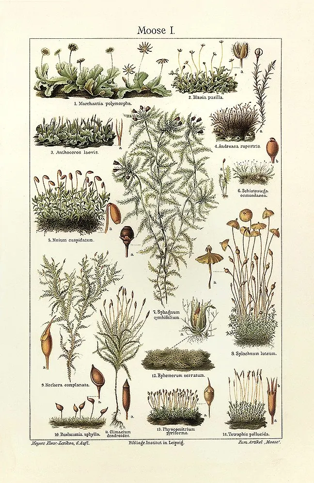

Viridivelleraceae
(Viridivellus Moss Family - informal)
Viridivelleraceae is a monotypic family known only from the extremely rare moss Viridivellus pulchellus, found in Australia. It is characterized by minute, bud-like gametophytes arising from a persistent, possibly somewhat reflective protonema, growing on soil in shaded microhabitats. Its sporophyte generation is currently unknown.
Overview
The Viridivelleraceae family is one of the most obscure and poorly understood families in the moss kingdom, containing only the single species Viridivellus pulchellus. This moss is known from just a few locations in Australia, where it inhabits deeply shaded, humid niches, such as soil under rock ledges.
The known plant consists primarily of a persistent protonema (the initial filamentous stage) that forms velvety green patches. From this protonema arise extremely small, bud-like leafy shoots (gametophores). Some reports suggest the protonema may exhibit a slight sheen or iridescence, potentially aiding light capture in its shaded habitat, leading to comparisons with the unrelated luminous moss, Schistostega. However, the mechanism and intensity differ. A critical point is that the sporophyte generation of Viridivellus has never been found or described, leaving major gaps in our understanding of its life cycle and reproductive biology.
Due to its rarity, minute size, reduced structure, and unknown sporophyte, the phylogenetic placement of Viridivelleraceae is highly uncertain. It represents an isolated and enigmatic lineage within the Bryopsida.
Quick Facts
- Scientific Name: Viridivelleraceae
- Common Name: (Viridivellus Moss Family - informal)
- Number of Genera: 1 (Viridivellus)
- Number of Species: 1 (Viridivellus pulchellus)
- Distribution: Australia (rare and localized).
- Evolutionary Group: Bryophytes - Bryopsida (True Mosses) - Order placement highly uncertain.
Key Characteristics
Knowledge of Viridivelleraceae is limited primarily to the gametophyte generation.
Gametophyte Form and Habit
The gametophyte is minute and dominated by the protonema:
- Protonema: Persistent, forming velvety green patches or films on the substrate. Filaments composed of relatively large cells. May exhibit some weak iridescence or sheen due to cell structure, but not the strong directed glow of Schistostega.
- Foliose Shoots (Gametophores): Extremely small (often < 1 mm), bud-like, scattered on the protonema, bearing few leaves.
- Habitat: Restricted to shaded, humid soil, often under rock ledges or in crevices.
Leaves (Phyllids)
Leaves are present only on the minute foliose shoots:
- Arrangement & Shape: Very small, few per shoot, broadly ovate or oblong, concave.
- Costa (Midrib): Absent.
- Margins: Entire (smooth).
- Cells: Large, thin-walled, smooth, rhomboidal to hexagonal.
Reproductive Structures
- Sexual Condition: Likely dioicous (based on limited observations).
- Archegonia & Antheridia: Terminal on the minute shoots, surrounded by slightly differentiated perichaetial/perigonial leaves. Details poorly known.
Sporophyte
The sporophyte generation (capsule, seta, foot) of Viridivellus pulchellus is currently unknown. Its characteristics cannot be described.
- Seta: Unknown.
- Capsule: Unknown.
- Dehiscence Mechanism: Unknown.
- Operculum & Peristome: Unknown.
- Calyptra: Unknown.
Spores
Spores are unknown as the sporophyte has not been observed.
Protonemal Features
The persistent protonema with potentially slightly reflective properties is a key feature, distinguishing it from typical filamentous protonemata, though less specialized than in Schistostega.
Field Identification
Identifying Viridivelleraceae is extremely challenging due to its rarity and minute size. It requires finding the specific habitat and recognizing the subtle features of the protonema and tiny gametophores.
Primary Identification Features (Requires Magnification)
- Habitat & Location: Critical – known only from specific shaded soil habitats (e.g., under rock ledges) in Australia.
- Velvety Protonemal Mat: Look for persistent, velvety green patches on soil. May show a slight sheen or iridescence under certain lighting.
- Minute Bud-like Shoots: Extremely small (< 1 mm) leafy shoots scattered across the protonema.
- Absence of Sporophytes: Currently, no known sporophytes exist for this family.
Secondary Identification Features (Requires Microscopy)
- Ecostate Leaves: Leaves on the tiny shoots lack a midrib.
- Large Leaf Cells: Cells are relatively large and lax.
Seasonal Identification Tips
- Year-Round?: Protonema is likely perennial in stable microhabitats. Foliose shoots may be more visible seasonally.
- Sporophytes: Unknown.
Common Confusion Points
Distinguishing Viridivellus from other minute organisms:
- Schistostega pennata: Similar habitat preference and persistent protonema. Distinguished by Schistostega's strong, directed luminescence, different protonemal cell structure, known cleistocarpous capsule, and Northern Hemisphere distribution.
- Ephemeraceae / Micromitriaceae: Also tiny mosses with persistent protonema. Distinguished by their known (though reduced) sporophytes (sessile/subsessile capsules) and different geographic distributions or microhabitats.
- Algae / Cyanobacteria / Lichen Crusts: Can form green films or crusts. Requires careful observation (preferably microscopic) to confirm the presence of moss protonema and the characteristic tiny, leafy shoots of Viridivellus.
- Protonema of other mosses: Most moss protonema is transient or less conspicuous/structured.
Field Guide Quick Reference
Look For:
- Habitat: Shaded soil under ledges (Australia)
- Velvety green protonemal mat (slight sheen?)
- Extremely minute leafy shoots (< 1mm)
- Leaves ecostate
- Sporophytes unknown
Key Distinctions:
- vs. Schistostega: Luminescence type/intensity, protonemal cells, known sporophyte, location (Australia vs. N Hemisphere).
- vs. Ephemeraceae/Micromitriaceae: Known sporophytes (sessile capsules) vs. unknown.
- vs. Algae/Lichens: Presence of moss protonema and leafy shoots.
Notable Examples
The family Viridivelleraceae is monotypic, containing only one known species.

Viridivellus pulchellus
(Viridivellus Moss)
The sole species in the family, known only from Australia. It is an extremely rare and minute moss characterized by its persistent protonema forming velvety patches, tiny bud-like leafy shoots with ecostate leaves, and its currently unknown sporophyte generation. It occupies deeply shaded soil habitats.
Phylogeny and Classification
Viridivelleraceae is classified within the class Bryopsida. Its phylogenetic position is highly uncertain due to its extreme rarity, highly reduced gametophyte structure, and the complete lack of knowledge about its sporophyte.
Without sporophyte characters or sufficient material for robust molecular analysis, placing Viridivelleraceae accurately is exceptionally difficult. Morphological comparisons are limited. Superficial similarities in the persistent, possibly reflective protonema have led to comparisons with Schistostegaceae, but this is likely convergent evolution related to low-light habitats, and a close relationship is generally considered unlikely. Its reduced features could potentially suggest affinities with ephemeral groups like those in Funariales (e.g., Ephemeraceae), but this is purely speculative without further data.
Currently, Viridivelleraceae is best regarded as a highly isolated lineage of uncertain affinities within the Bryopsida. It may represent a relictual line or an extreme adaptation whose relationships have been obscured by reduction.
Position in Plant Phylogeny
- Kingdom: Plantae
- Clade: Embryophyta (Land Plants)
- Division: Bryophyta (Mosses)
- Class: Bryopsida
- Order: Placement Highly Uncertain
- Family: Viridivelleraceae
Evolutionary Significance
Viridivelleraceae, despite being poorly known, is significant:
- Extreme Reduction: Represents a potentially extreme case of gametophyte reduction in mosses.
- Adaptation to Shade: Its persistent protonema suggests specialized adaptation to low-light environments, possibly convergent with Schistostega.
- Phylogenetic Enigma: Highlights the vast unknown diversity and evolutionary history within bryophytes and the challenges posed by rare, reduced taxa.
- Conservation Concern: Its extreme rarity underscores the importance of conserving unique microhabitats and biodiversity hotspots. Discovery of sporophytes or successful molecular analysis would be major breakthroughs.